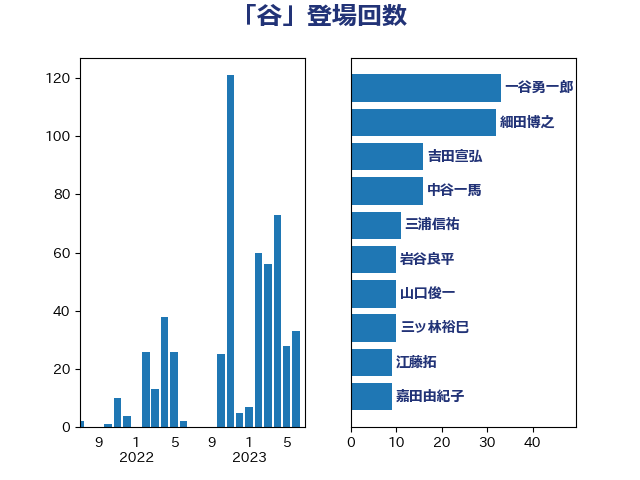

単語「谷」

| 一谷勇一郎 | 日本維新の会 | 33 回 |
| 細田博之 | 自由民主党 | 32 回 |
| 吉田宣弘 | 公明党 | 16 回 |
| 中谷一馬 | 立憲民主党 | 16 回 |
| 三浦信祐 | 公明党 | 11 回 |
| 岩谷良平 | 日本維新の会 | 10 回 |
| 山口俊一 | 自由民主党 | 10 回 |
| 三ッ林裕巳 | 自由民主党 | 10 回 |
| 江藤拓 | 自由民主党 | 9 回 |
| 嘉田由紀子 | 無所属 | 9 回 |
| 足立敏之 | 自由民主党 | 8 回 |
| 足立康史 | 日本維新の会 | 8 回 |
| 田村貴昭 | 日本共産党 | 8 回 |
| 斉藤鉄夫 | 公明党 | 8 回 |
| 古賀友一郎 | 自由民主党 | 8 回 |
| 橋本岳 | 自由民主党 | 7 回 |
| 根本匠 | 自由民主党 | 7 回 |
| 加田裕之 | 自由民主党 | 7 回 |
| 遠藤良太 | 日本維新の会 | 6 回 |
| 海江田万里 | 立憲民主党 | 6 回 |
| 平将明 | 自由民主党 | 6 回 |
| 山岸一生 | 立憲民主党 | 6 回 |
| 小寺裕雄 | 自由民主党 | 6 回 |
| 大西英男 | 自由民主党 | 6 回 |
| 青木愛 | 立憲民主党 | 5 回 |
| 谷公一 | 自由民主党 | 5 回 |
| 緒方林太郎 | 無所属 | 5 回 |
| 礒崎哲史 | 国民民主党 | 5 回 |
| 石原宏高 | 自由民主党 | 5 回 |
| 浜田聡 | NHK党 | 5 回 |
| 櫻井周 | 立憲民主党 | 5 回 |
| 横沢高徳 | 立憲民主党 | 5 回 |
| 木原稔 | 自由民主党 | 5 回 |
| 宮本岳志 | 日本共産党 | 5 回 |
| 上田清司 | 国民民主党 | 5 回 |
| 高木かおり | 日本維新の会 | 4 回 |
| 阿部知子 | 立憲民主党 | 4 回 |
| 本庄知史 | 立憲民主党 | 4 回 |
| 星野剛士 | 自由民主党 | 4 回 |
| 工藤彰三 | 自由民主党 | 4 回 |
| 岸田文雄 | 自由民主党 | 4 回 |
| 岬麻紀 | 日本維新の会 | 4 回 |
| 堀内詔子 | 自由民主党 | 4 回 |
| 馬淵澄夫 | 立憲民主党 | 3 回 |
| 鈴木淳司 | 自由民主党 | 3 回 |
| 葉梨康弘 | 自由民主党 | 3 回 |
| 福田昭夫 | 立憲民主党 | 3 回 |
| 柿沢未途 | 無所属 | 3 回 |
| 杉尾秀哉 | 立憲民主党 | 3 回 |
| 末松信介 | 自由民主党 | 3 回 |
| 宮口治子 | 立憲民主党 | 3 回 |
| 太栄志 | 立憲民主党 | 3 回 |
| 務台俊介 | 自由民主党 | 3 回 |
| 倉林明子 | 日本共産党 | 3 回 |
| 仁木博文 | 無所属 | 3 回 |
| 高橋千鶴子 | 日本共産党 | 2 回 |
| 近藤和也 | 立憲民主党 | 2 回 |
| 竹内真二 | 公明党 | 2 回 |
| 空本誠喜 | 日本維新の会 | 2 回 |
| 稲富修二 | 立憲民主党 | 2 回 |
| 玉木雄一郎 | 国民民主党 | 2 回 |
| 浜口誠 | 国民民主党 | 2 回 |
| 永岡桂子 | 自由民主党 | 2 回 |
| 梅村聡 | 日本維新の会 | 2 回 |
| 柚木道義 | 立憲民主党 | 2 回 |
| 後藤祐一 | 立憲民主党 | 2 回 |
| 平木大作 | 公明党 | 2 回 |
| 山本香苗 | 公明党 | 2 回 |
| 小野泰輔 | 日本維新の会 | 2 回 |
| 小宮山泰子 | 立憲民主党 | 2 回 |
| 室井邦彦 | 日本維新の会 | 2 回 |
| 堀場幸子 | 日本維新の会 | 2 回 |
| 原口一博 | 立憲民主党 | 2 回 |
| 伊藤忠彦 | 自由民主党 | 2 回 |
| 今枝宗一郎 | 自由民主党 | 2 回 |
| 亀岡偉民 | 自由民主党 | 2 回 |
| 中野英幸 | 自由民主党 | 2 回 |
| 下条みつ | 立憲民主党 | 2 回 |
| 三谷英弘 | 自由民主党 | 2 回 |
| 高市早苗 | 自由民主党 | 1 回 |
| 青島健太 | 日本維新の会 | 1 回 |
| 長谷川英晴 | 自由民主党 | 1 回 |
| 長妻昭 | 立憲民主党 | 1 回 |
| 長友慎治 | 国民民主党 | 1 回 |
| 鈴木敦 | 国民民主党 | 1 回 |
| 鈴木俊一 | 自由民主党 | 1 回 |
| 野田聖子 | 自由民主党 | 1 回 |
| 逢坂誠二 | 立憲民主党 | 1 回 |
| 萩生田光一 | 自由民主党 | 1 回 |
| 美延映夫 | 日本維新の会 | 1 回 |
| 窪田哲也 | 公明党 | 1 回 |
| 稲田朋美 | 自由民主党 | 1 回 |
| 稲津久 | 公明党 | 1 回 |
| 福島伸享 | 無所属 | 1 回 |
| 福山哲郎 | 立憲民主党 | 1 回 |
| 神田憲次 | 自由民主党 | 1 回 |
| 神津たけし | 立憲民主党 | 1 回 |
| 田中良生 | 自由民主党 | 1 回 |
| 源馬謙太郎 | 立憲民主党 | 1 回 |
| 渡辺猛之 | 自由民主党 | 1 回 |
| 浅川義治 | 日本維新の会 | 1 回 |
| 泉田裕彦 | 自由民主党 | 1 回 |
| 河西宏一 | 公明党 | 1 回 |
| 池下卓 | 日本維新の会 | 1 回 |
| 柳ヶ瀬裕文 | 日本維新の会 | 1 回 |
| 松野博一 | 自由民主党 | 1 回 |
| 松本尚 | 自由民主党 | 1 回 |
| 朝日健太郎 | 自由民主党 | 1 回 |
| 市村浩一郎 | 日本維新の会 | 1 回 |
| 川合孝典 | 国民民主党 | 1 回 |
| 岸真紀子 | 立憲民主党 | 1 回 |
| 岩本剛人 | 自由民主党 | 1 回 |
| 山際大志郎 | 自由民主党 | 1 回 |
| 山本順三 | 自由民主党 | 1 回 |
| 山口晋 | 自由民主党 | 1 回 |
| 山井和則 | 立憲民主党 | 1 回 |
| 山下芳生 | 日本共産党 | 1 回 |
| 小林茂樹 | 自由民主党 | 1 回 |
| 小倉將信 | 自由民主党 | 1 回 |
| 宮崎雅夫 | 自由民主党 | 1 回 |
| 宮崎勝 | 公明党 | 1 回 |
| 奥野総一郎 | 立憲民主党 | 1 回 |
| 奥下剛光 | 日本維新の会 | 1 回 |
| 大島敦 | 立憲民主党 | 1 回 |
| 大岡敏孝 | 自由民主党 | 1 回 |
| 塩田博昭 | 公明党 | 1 回 |
| 塚田一郎 | 自由民主党 | 1 回 |
| 城内実 | 自由民主党 | 1 回 |
| 国定勇人 | 自由民主党 | 1 回 |
| 吉良州司 | 無所属 | 1 回 |
| 吉田とも代 | 日本維新の会 | 1 回 |
| 古川元久 | 国民民主党 | 1 回 |
| 加藤勝信 | 自由民主党 | 1 回 |
| 前川清成 | 日本維新の会 | 1 回 |
| 佐藤信秋 | 自由民主党 | 1 回 |
| 伊波洋一 | 無所属 | 1 回 |
| 中根一幸 | 自由民主党 | 1 回 |
| 中川宏昌 | 公明党 | 1 回 |
| 下野六太 | 公明党 | 1 回 |
| 上野賢一郎 | 自由民主党 | 1 回 |